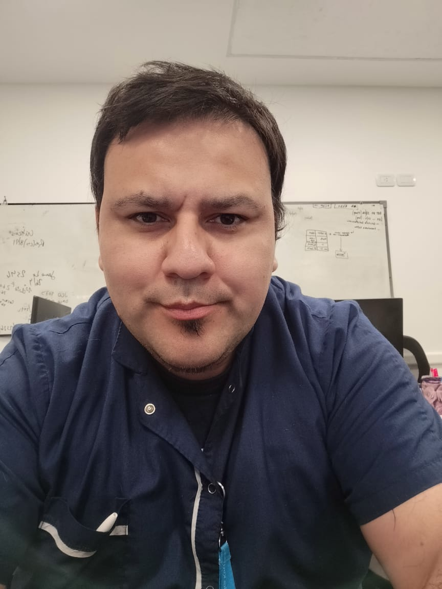
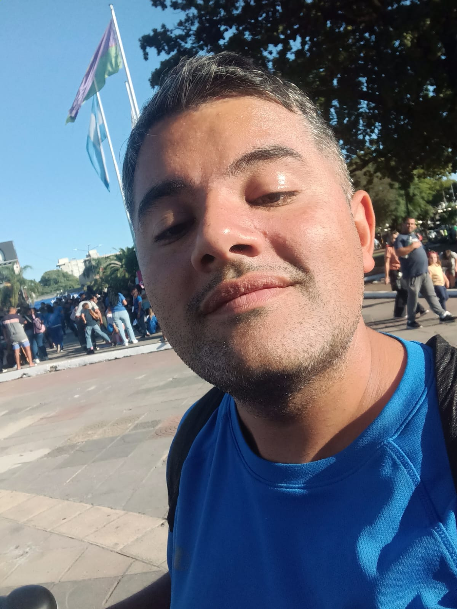
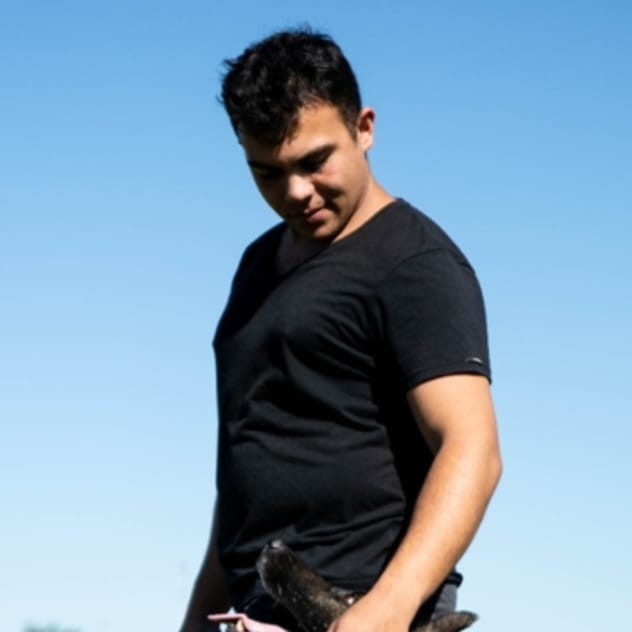

Desde Cero Voces Ciudadanas
"Desde Cero Voces Ciudadanas" es un programa radial tipo magazine de actualidad y cultural. Va dirigido a aquellas voces que muchas veces suelen ser silenciadas en los medios hegemónicos. El objetivo principal de su creación fue el de construir un canal para diversas voces, y un espacio de difusión para las mismas.
Por tal motivo, a través de distintos testimonios, historias de vida, noticias, entrevistas, etc. En cada emisión apunto a construir un periodismo visceral que se caracteriza también por ser feminista y con perspectiva de género. "Mi bebe radial" como me gusta llamarlo nació un día de lluvia cerca de la universidad, junto a dos compañeros de la facu bajo el nombre de Desde Cero, y con el tiempo fue creciendo y mutando, desde el año 2018 al presente.
Hoy a siete años de llevar a cabo este proyecto comunicacional puedo decir que encontré mi lugar, en el cual, construir otro tipo de periodismo, y me llena de orgullo el recordar la cantidad de contenido creado con todas las voces que fueron pasando, y dejando su huella en este hermoso camino del comunicar.
Nuestras Columnas
| Nombre de la Columna | Información | Columnista |
|---|---|---|
| Resistiendo con Salud |

Prof. Lic. Jorge LujanMaster en Administación de Servicios de Salud. Profesor de la UNAJ. |
|
| Cultuza |

Carlos RuizEscritor de cuentos, historietas y microcuentos. Estudio Historia en la UNTREF. Fuí diagnosticado con Asperger a los 23 años. |
|
| Bloco Almada | Bloco Almada nuestro espacio etereo donde la voz de los artistas musicales se hace oír y nos invita a conocer sus historias junto al periodista brasileño Rafael Pompeu, mediante entrevistas nacionales e internacionales. | |
| Mundo Perro |

Federico GarciaAdiestrador Canino Profesional UBA |